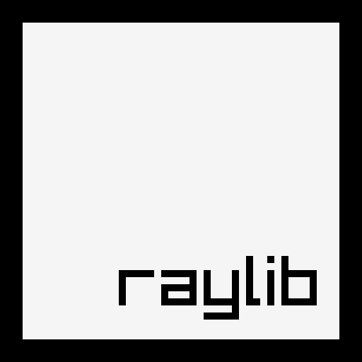

Simple on purpose
One small, readable C API. No archaeology expedition before the first triangle.
A LOVE LETTER IN 60 FRAMES PER SECOND
Simple enough to learn in an afternoon. Powerful enough to keep using for years. raylib puts nothing between an idea and the first moving pixel. That is exactly why I love it.

SIMPLE / DIRECT / JOYFULNO EDITOR. NO CEREMONY.
JUST CODE AND THE LOOP.
01 / WHY RAYLIB
raylib trusts you with the loop. It gives you the sharp, beautifully named pieces: window, input, drawing, audio, and math. Then it gets out of the way. The feedback is instant. The API reads like intent. The fun survives the tooling.
One small, readable C API. No archaeology expedition before the first triangle.
No visual machinery hiding the work. You own the loop, state, and feel.
Open source, multi-platform, and surrounded by a community that keeps building.
02 / MY BINDING
A tiny rascal of a binding for raylib. My Scala Native layer brings raylib 6.0 into idiomatic Scala while still producing a single native binary.
Full surface areaWindowing, input, drawing, textures, 3D, audio, shaders, collisions and low-level rlgl.
Native ownershipManaged handles, scoped with... helpers, fast failure on use-after-unload.
Built to prove itselfABI checks, FFI safety assertions, native examples, and a complete arcade game.
03 / I WANT TO HELP
I already care enough to build another language bridge. I’d be genuinely glad to help upstream too: bindings, examples, tools, docs, bug fixes, or whatever moves the library forward.
04 / A SMALL GAME
Bring the little ship down on the yellow pad. Keep it upright, watch your speed, and try not to use all the fuel.
turn left / right
thrust up / w / space
goal land gently on yellow
It uses the browser runtime from konsumer/raylib-wasm ↗. I wrote the game and drew everything with basic raylib shapes.
THANK YOU FOR MAKING THE DIRECT ROUTE
FROM CODE TO JOY.